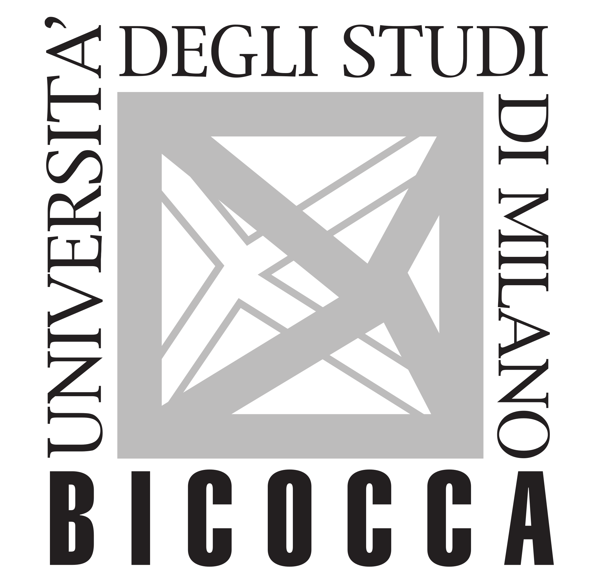

UN PROGETTO DI RICERCA, PER LA SCUOLA
Imparare.
Crescere.
Senza pressione.
Il valore di una persona va oltre un voto. Studiamo come aiutare la scuola a coltivare apprendimento, motivazione e benessere.
Under Pressure · Università di Milano-Bicocca
Facciamo spazio
all’apprendimento.

Università degli Studi di
Milano-Bicocca · DEMS
01 / LA DOMANDA DA CUI PARTIAMO
E se la scuola fosse
un luogo in cui crescere,
senza sentirsi un voto?
Voti, confronto sociale e aspettative influenzano il modo in cui gli studenti vivono la scuola e percepiscono sé stessi.
Under Pressure studia questi meccanismi e sperimenta pratiche educative che sostengano la motivazione, senza trasformare la performance in una misura del valore personale.
La nostra domanda di ricerca02 / DALLA RICERCA ALLA CLASSE
Capire. Sperimentare. Migliorare.
Un percorso condiviso
con studenti, docenti e scuole.
Ascoltare gli studenti
Una survey per conoscere l’esperienza scolastica, la motivazione e il benessere di chi la scuola la vive.
La surveyAffiancare i docenti
Percorsi di formazione gratuiti per esplorare nuove pratiche di motivazione e valutazione.
L’esperimentoCapire cosa funziona
Un confronto rigoroso tra pratiche diverse, per individuare quelle che aiutano davvero ad apprendere.
Come partecipareINSIEME ALLE SCUOLE
Il cambiamento
inizia in classe.
Porta la tua scuola dentro la ricerca.
Costruiamo insieme nuove possibilità per imparare.
01 Formazione gratuita per i docenti
02 Collaborazione con il gruppo di ricerca
03 Un contributo al benessere scolastico
Parliamone: progetto.scuole@unimib.it ↗